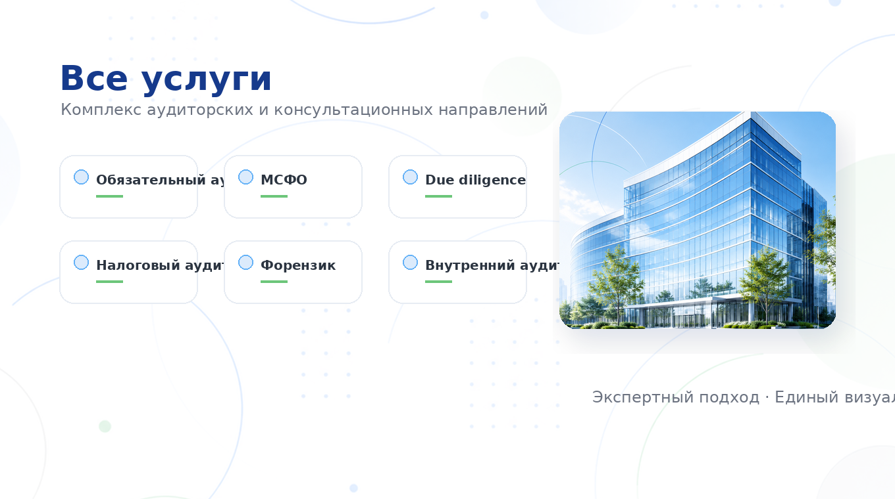

Главная — Услуги
Полный спектр
От обязательного аудита до финансовых расследований и независимой экспертизы сделок. Ниже — основные направления; по каждому готовы обсудить вашу конкретную задачу.

Аудит по РСБУ для случаев, установленных законом.
Подробнее →Трансформация и аудит международной отчётности.
Подробнее →Финансовая и налоговая предынвестиционная экспертиза.
Подробнее →Диагностика налоговых рисков и проверка учёта.
Подробнее →Финансовое расследование.
Подробнее →Контроль инвестпроекта на этапе реализации.
Подробнее →Оценка и построение системы внутреннего контроля.
Подробнее →Инициативный аудит ограниченного объёма.
Подробнее →Любая экономическая деятельность подразумевает налоговые последствия. В рамках налогового аудита мы проверяем правильность исчисления и уплаты налогов, выявляем зоны налогового риска и оцениваем их возможное влияние на отчётность.
По итогам вы получаете отчёт с описанием выявленных рисков и рекомендациями по их снижению.
Проводим экспертизу финансово-хозяйственной деятельности и отчётности для выявления искажений и злоупотреблений — при строгом соблюдении конфиденциальности.
Профессиональная комплексная оценка инвестиционного проекта на этапе его реализации. Аудит строительства проводится по запросу кредитующей или инвестирующей организации.
Оцениваем эффективность системы внутреннего контроля и ключевых бизнес-процессов, а также помогаем выстроить такую систему с нуля.
Совокупность ограниченных аналитических процедур для проверки надёжности предпосылок составления отчётности. Инициируется собственником или менеджментом.
Уровень уверенности по обзорной проверке ниже, чем по полноценному аудиту, но она быстрее и дешевле для оперативных задач.
Опишите задачу — подберём формат работы и специалистов.